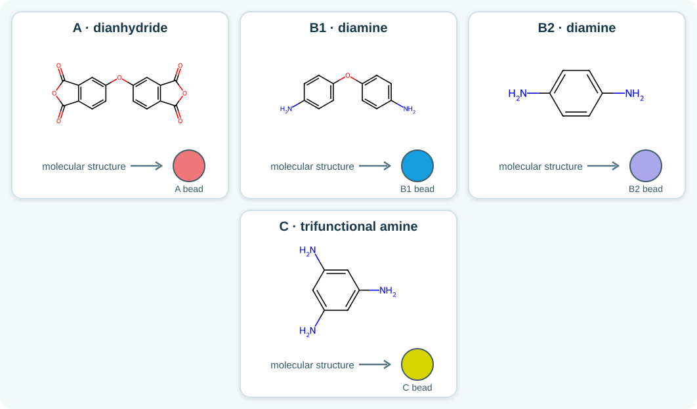
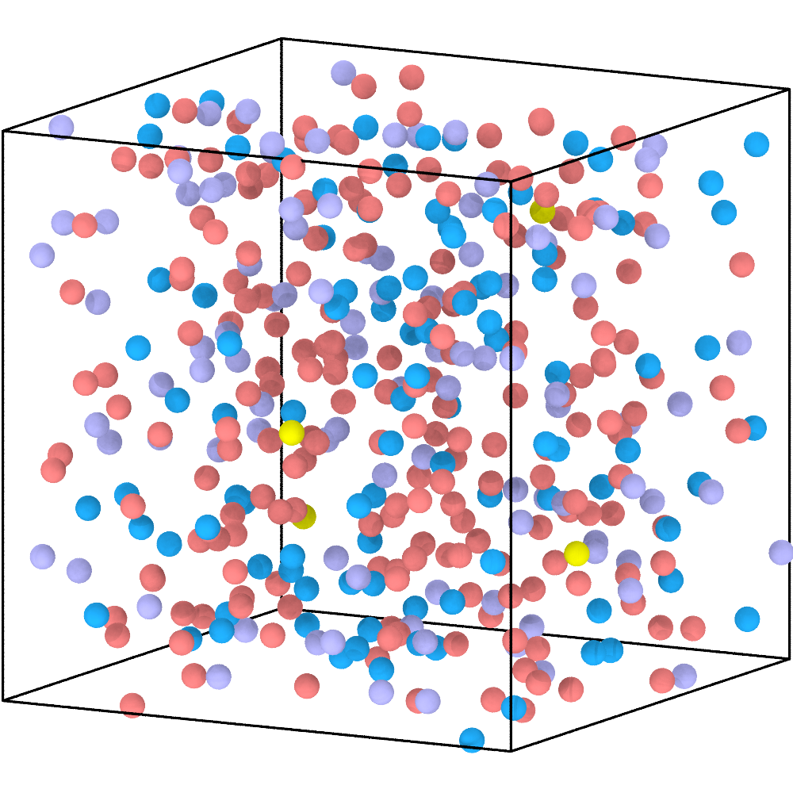
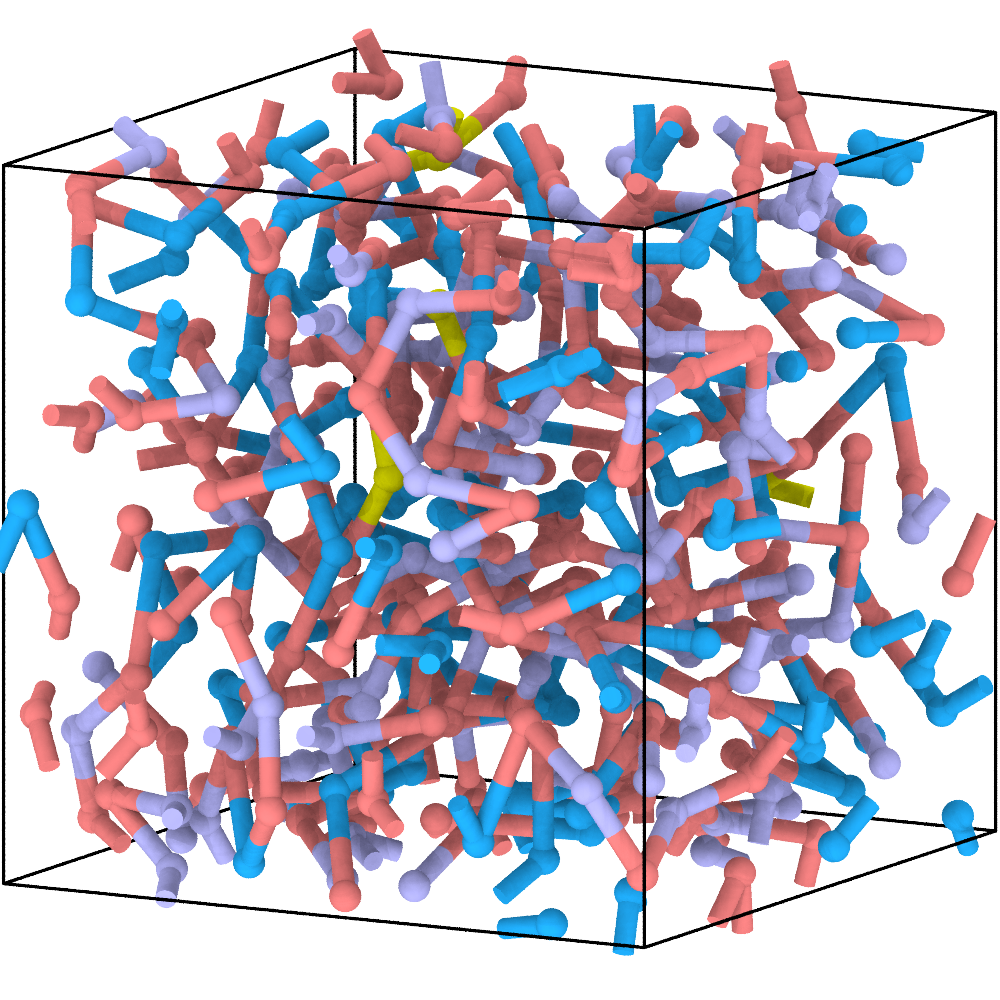
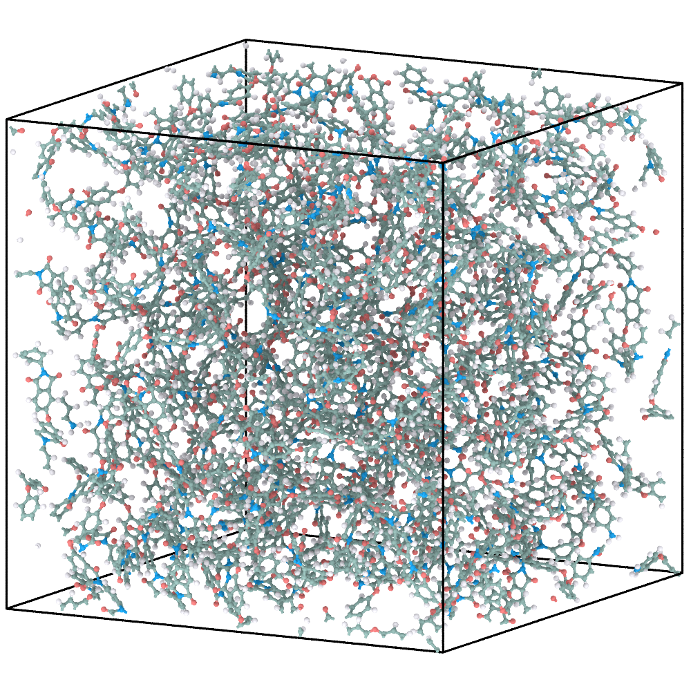
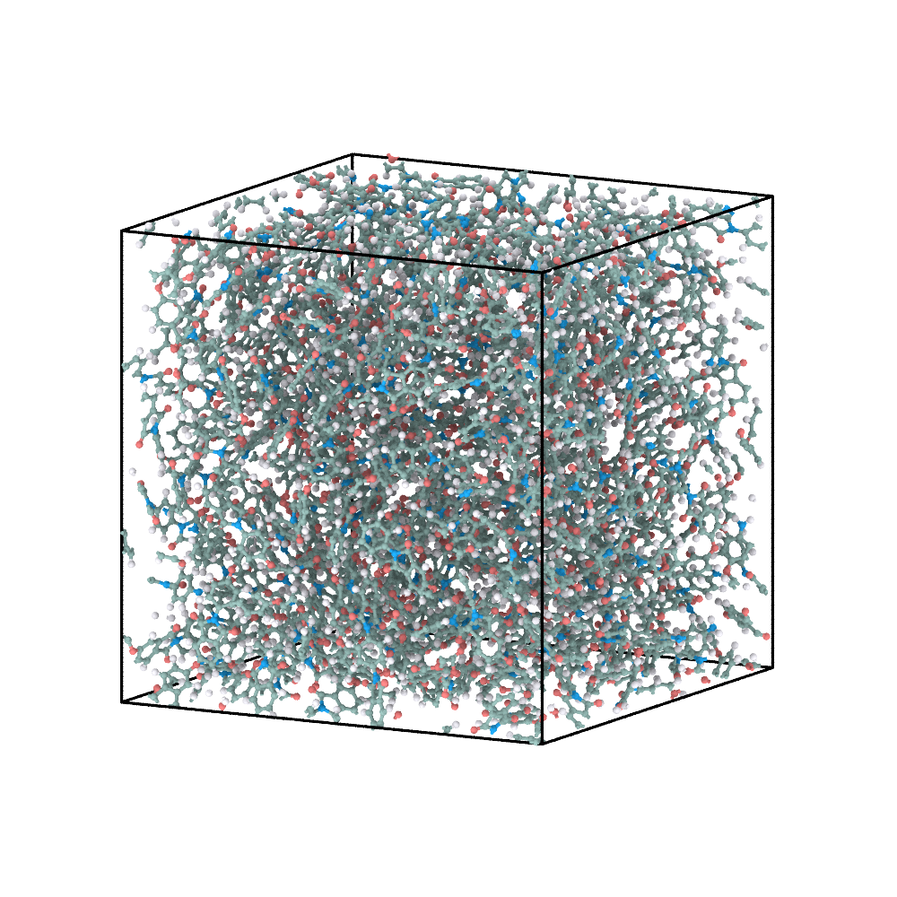

3. Cross-linked polyimide: introduce multifunctional branching¶
This example extends the linear polyimide chemistry with a trifunctional amine. The reconstruction procedure is unchanged; branching emerges from the permitted CG connections.
1. Define the network-forming reactants¶
The four molecular reactants and their CG colours are shown below.
{kind=link}

Network-forming reactants and their one-bead CG representations.¶
{
"cg_topology_file": "reaction_final.xml",
"reaction_path_file": "reaction_path.txt",
"domd_react_dsl": "v1",
"reactants": [
{
"name": "A",
"smiles": "O1C(=O)c2ccc(Oc3cc4C(=O)OC(=O)c4cc3)cc2C1=O",
"N": 200,
"max_valence": 2
},
{
"name": "B1",
"smiles": "Nc1ccc(Oc2ccc(N)cc2)cc1",
"N": 100,
"max_valence": 2
},
{
"name": "B2",
"smiles": "Nc1ccc(N)cc1",
"N": 100,
"max_valence": 2
},
{
"name": "C",
"smiles": "Nc1cc(N)cc(N)c1",
"N": 4,
"max_valence": 3
}
],
"reactions": [
{
"name": "A-B1",
"kind": "general",
"reactants": ["A", "B1"],
"smarts": "[O:1]=[C:2][O:3][C:4]=[O:5].[NH2:6]>>[O:1]=[C:2][N:6][C:4]=[O:5].[O:3]",
"prod_idx": [
0
],
"intrinsic_probability": 1.0
},
{
"name": "B1-A",
"kind": "general",
"reactants": ["B1", "A"],
"smarts": "[NH2:6].[O:1]=[C:2][O:3][C:4]=[O:5]>>[O:1]=[C:2][N:6][C:4]=[O:5].[O:3]",
"prod_idx": [
0
],
"intrinsic_probability": 1.0
},
{
"name": "A-B2",
"kind": "general",
"reactants": ["A", "B2"],
"smarts": "[O:1]=[C:2][O:3][C:4]=[O:5].[NH2:6]>>[O:1]=[C:2][N:6][C:4]=[O:5].[O:3]",
"prod_idx": [
0
],
"intrinsic_probability": 1.0
},
{
"name": "B2-A",
"kind": "general",
"reactants": ["B2", "A"],
"smarts": "[NH2:6].[O:1]=[C:2][O:3][C:4]=[O:5]>>[O:1]=[C:2][N:6][C:4]=[O:5].[O:3]",
"prod_idx": [
0
],
"intrinsic_probability": 1.0
},
{
"name": "A-C",
"kind": "general",
"reactants": ["A", "C"],
"smarts": "[O:1]=[C:2][O:3][C:4]=[O:5].[NH2:6]>>[O:1]=[C:2][N:6][C:4]=[O:5].[O:3]",
"prod_idx": [
0
],
"intrinsic_probability": 1.0
},
{
"name": "C-A",
"kind": "general",
"reactants": ["C", "A"],
"smarts": "[NH2:6].[O:1]=[C:2][O:3][C:4]=[O:5]>>[O:1]=[C:2][N:6][C:4]=[O:5].[O:3]",
"prod_idx": [
0
],
"intrinsic_probability": 1.0
}
]
}
Type |
Count |
|
Role |
|---|---|---|---|
|
200 |
2 |
bifunctional dianhydride |
|
100 |
2 |
bifunctional diamine |
|
100 |
2 |
second bifunctional diamine |
|
4 |
3 |
trifunctional branch point |
The six ordered rules cover A-B1, A-B2, and A-C in both participant
orders. They share the same local imidization SMARTS. Composition and
max_valence determine the possible network topology; the SMARTS determines
the atomistic transformation.
2. Construct and relax the CG network¶
Run this command from the extracted tutorial directory (or replace the paths
with absolute paths). --name identifies the workspace for this example;
04_network_pi/cg/ receives the generated initial.xml,
cg_parameters.json, and run_pygamd_polymerization.py.
chemfast prepare_cg --json 04_network_pi/config.json --name 04_network_pi
Next, switch to 04_network_pi/cg/ and run the generated PyGAMD script
with an interpreter that supports PyGAMD:
python run_pygamd_polymerization.py initial.xml cg_parameters.json --gpu=0
Once PyGAMD finishes, 04_network_pi/cg/ should contain the matching
reaction_final.xml and reaction_path.txt. Return to the extracted tutorial
directory before using the relative --name in the following command; alternatively,
provide the absolute workspace path to run the CLI from anywhere.
Initial CG mixture |
Polymerized and pre-equilibrated CG network |
|---|---|
 |
 |
The yellow C beads can accept three reaction-generated connections, creating branch points among the bifunctional components. Trifunctionality permits a network but does not guarantee that every finite trajectory percolates.
3. Reconstruct the atomistic network¶
chemfast reconstruct_aa --name 04_network_pi
The CLI reads 04_network_pi/config.json and the two fixed CG outputs from
04_network_pi/cg/, then writes the reconstructed SDF and GROMACS files to
04_network_pi/aa/. No CG result filenames need to be passed again.
Final CG network |
Energy-minimized AA reconstruction |
|---|---|
 |
ReactionPath replay assigns the correct diamine or trifunctional amine to every accepted CG event. The final CG geometry guides the placement of the resulting atomistic network.
4. Briefly equilibrate the AA model¶
See AA relaxation for the external GROMACS steps used to
produce EM/EQ coordinates from the reconstructed system.gro.
Energy-minimized AA model |
AA model after the supplied short equilibration |
|---|---|
 |
This short run provides an initial coordinate relaxation only. Network properties require an independently validated production protocol.
What to inspect¶
C beads never exceed three reaction-generated connections;
A, B1, and B2 beads never exceed two;
ReactionPath rules agree with the participating bead types;
the atomistic network and force-field export contain the expected branch points and all required bonded terms.
Next: POSS-PMMA.